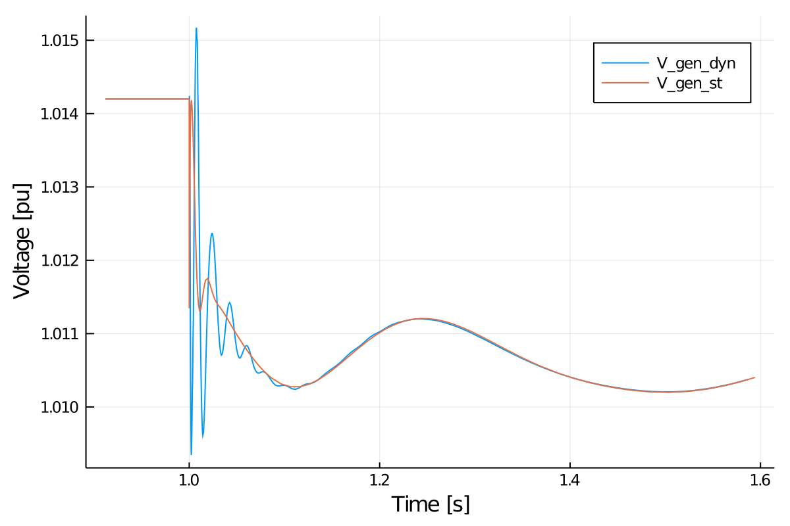

Tutorial: Dynamic Lines
This tutorial will introduce an example of considering dynamic lines in LITS. Note that this tutorial is for LITS 0.2.0. Future versions will have dedicated functions to find an equilibrium point and a proper functions for running perturbations without coding directly the callbacks.
This tutorial presents a simulation of a three-bus system, with an infinite bus (represented as a voltage source behind an impedance) at bus 1, and a one d- one q- machine on bus 2 and an inverter of 19 states, as a virtual synchronous machine at bus 3. The perturbation will be the trip of two of the three circuits (triplicating its resistance and impedance) of the line that connects bus 1 and bus 3. This case also consider a dynamic line model for connection between buses 2 and 3.
This tutorial can be found on LITS/Examples repository.
Step 1: Package Initialization
using LITS
using PowerSystems
using NLsolve
using DiffEqBase
using Sundials
const PSY = PowerSystemsStep 2: Data creation
To start we will define the data structures for the network.
Buses and Branches
nodes_case9 = [Bus(1 , "Bus 1" , "REF" , 0 , 1.02 , (min=0.94, max=1.06), 138),
Bus(2 , "Bus 2" , "PV" , 0 , 1.00 , (min=0.94, max=1.06), 138),
Bus(3 , "Bus 3" , "PQ" , 0 , 1.00 , (min=0.94, max=1.06), 138)]
branch_case9 = [Line("Line1", true, 0.0, 0.0, Arc(from=nodes_case9[1], to=nodes_case9[3]), 0.01, 0.12, (from=0.1, to=0.1), 100, 1.04),
Line("Line2", true, 0.0, 0.0, Arc(from=nodes_case9[1], to=nodes_case9[2]), 0.01, 0.12, (from=0.1, to=0.1), 100, 1.04)]
#Trip of Line 1. Triplicates its impedance
branch_case9_fault = [Line("Line1", true, 0.0, 0.0, Arc(from=nodes_case9[1], to=nodes_case9[3]), 0.03, 0.36, (from=0.03, to=0.03), 100, 1.04),
Line("Line2", true, 0.0, 0.0, Arc(from=nodes_case9[1], to=nodes_case9[2]), 0.01, 0.12, (from=0.1, to=0.1), 100, 1.04)]
#Dynamic Branch between nodes 2 and 3.
dyn_branch9 = [LITS.DynLine("Line3", true, Arc(from=nodes_case9[2], to=nodes_case9[3]), 0.02, 0.9, (from=0.5, to=0.5))];Injection devices
loads_case9 = [PowerLoad("Bus1", true, nodes_case9[1], PowerSystems.ConstantPower, 0.5, 0.1, 1.5, 0.8),
PowerLoad("Bus2", true, nodes_case9[2], PowerSystems.ConstantPower, 1.0, 0.3, 1.5, 0.8),
PowerLoad("Bus3", true, nodes_case9[3], PowerSystems.ConstantPower, 0.3, 0.1, 0.5, 0.3)]
inf_gen_case9 = StaticSource(1, #number
:InfBus, #name
nodes_case9[1],#bus
1.00, #VR
0.0, #VI
0.000005); #XthDynamic injection devices
First we define our generator data:
######## Machine Data #########
### Case: 4th Order Model with AVR (3-bus case) ###
case9_machine = OneDOneQMachine(0.0, #R
1.3125, #Xd
1.2578, #Xq
0.1813, #Xd_p
0.25, #Xq_p
5.89, #Td0_p
0.6, #Tq0_p
100.0) #MVABase
######## Shaft Data #########
### Shafts for Gen ###
case9_shaft = SingleMass(3.01, #H (M = 6.02 -> H = M/2)
0.0) #D
######## PSS Data #########
### No PSS ###
cases_no_pss = PSSFixed(0.0)
######## TG Data #########
### No TG ###
case9_no_tg = TGFixed(1.0) #eff
######## AVR Data #########
### AVRs for this case ###
case9_avr = AVRTypeI(20.0, #Ka - Gain
0.01, #Ke
0.063, #Kf
0.2, #Ta
0.314, #Te
0.35, #Tf
0.001, #Tr
5.0, #Vrmax
-5.0, #Vrmin
0.0039, #Ae - 1st ceiling coefficient
1.555) #Be - 2nd ceiling coefficient
### Generators ###
case9_gen = DynGenerator(1, #Number
:Case9Gen,
nodes_case9[2], #bus
1.0, # ω_ref,
1.0124, #V_ref
0.6, #P_ref
case9_machine, #machine
case9_shaft, #shaft
case9_avr, #avr
case9_no_tg, #tg
cases_no_pss); #pssand for the inverter:
############### Inverter Data ########################
converter = AvgCnvFixedDC(138.0, #Rated Voltage
100.0) #Rated MVA
dc_source = FixedDCSource(1500.0) #Not in the original data, guessed.
filt = LCLFilter(0.08, #Series inductance lf in pu
0.003, #Series resitance rf in pu
0.074, #Shunt capacitance cf in pu
0.2, #Series reactance rg to grid connection (#Step up transformer or similar)
0.01) #Series resistance lg to grid connection (#Step up transformer or similar)
pll = PLL(500.0, #ω_lp: Cut-off frequency for LowPass filter of PLL filter.
0.084, #k_p: PLL proportional gain
4.69) #k_i: PLL integral gain
virtual_H = VirtualInertia(2.0, #Ta:: VSM inertia constant
400.0, #kd:: VSM damping coefficient
20.0, #kω:: Frequency droop gain in pu
2*pi*50.0) #ωb:: Rated angular frequency
Q_control = ReactivePowerDroop(0.2, #kq:: Reactive power droop gain in pu
1000.0) #ωf:: Reactive power cut-off low pass filter frequency
outer_control = VirtualInertiaQdroop(virtual_H, Q_control)
vsc = CombinedVIwithVZ(0.59, #kpv:: Voltage controller proportional gain
736.0, #kiv:: Voltage controller integral gain
0.0, #kffv:: Binary variable enabling the voltage feed-forward in output of current controllers
0.0, #rv:: Virtual resistance in pu
0.2, #lv: Virtual inductance in pu
1.27, #kpc:: Current controller proportional gain
14.3, #kiv:: Current controller integral gain
0.0, #kffi:: Binary variable enabling the current feed-forward in output of current controllers
50.0, #ωad:: Active damping low pass filter cut-off frequency
0.2) #kad:: Active damping gain
case9_inv = DynInverter(2, #number
:DARCO, #name
nodes_case9[3], #bus location
1.0, #ω_ref
0.8, #V_ref
0.5, #P_ref
-0.3, #Q_ref
100.0, #MVABase
converter, #Converter
outer_control, #OuterControl
vsc, #Voltage Source Controller
dc_source, #DC Source
pll, #Frequency Estimator
filt); #Output FilterDynamic System
case9_DynSystem = DynamicSystem(nodes_case9, #Vector of Buses
branch_case9, #Vector of Branches
[case9_inv, case9_gen], #Vector of Dynamic Injections
vcat(inf_gen_case9, loads_case9), #Vector of Injections
100.0, #MVA Base
50.0, #Freq. Base
dyn_branch9); #Vector of Dynamic BranchesStep 3: Initializing the problem
To initialize the problem we need to define an initial guess of the states:
dx0 = zeros(LITS.get_total_rows(case9_DynSystem))
x0 = [1.00, #V1_R
1.00, #V2_R
1.00, #V3_R
0.0, #V1_I
-0.01, #V2_I
-0.01, #V3_I
0.0, #δω_vsm
0.2, #δθ_vsm
0.025, #qm
0.0015, #ξ_d
-0.07, #ξ_q
0.05, #γ_d
-0.001, #γ_q
0.95, #ϕ_d
-0.10, #ϕ_q
1.004, #vpll_d
0.0, #vpll_q
0.0, #ε_pll
0.1, #δθ_pll
0.5, #id_cv
0.0, #iq_cv
0.95, #vod
-0.1, #voq
0.49, #iod
-0.1, #ioq
1.0, #eq_p
0.47, #ed_p
0.6, #δ
1.0, #ω
2.1, #Vf
0.28, #Vr1
-0.39, #Vr2,
1.0, #Vm
0.5, #IL1_R
0.5] #IL1_I
case9_inv.inner_vars[13] = 0.95 #Initialize internal variables of inverter: Vd_cnv var
case9_inv.inner_vars[14] = -0.1 #Initialize internal variables of inverter: Vq_cnv var
tspan = (0.0, 30.0);We will use NLsolve to find the initial condition of the system:
#Find initial condition
inif! = (out,x) -> LITS.system_model!(out, dx0 ,x, ([0.0],case9_DynSystem), 0.0)
sys_solve = nlsolve(inif!, x0, xtol=:1e-8,ftol=:1e-8,method=:trust_region)
x0_init = sys_solve.zeroStep 4: Build the Simulation
#Compute Y_bus after fault
Ybus_fault = Ybus(branch_case9_fault, nodes_case9)[:,:]
#Define Fault using Callbacks
cb = DiffEqBase.DiscreteCallback(LITS.change_t_one, LITS.Y_change!)
#Define Simulation Problem
sim = DynamicSimulation(case9_DynSystem, tspan, Ybus_fault, cb, x0_init)
#Solve problem
run_simulation!(sim, IDA());Step 5: Explore the solution
using Plots
volt = get_voltagemag_series(sim, 2)
plot(volt, xlabel="time", ylabel="Voltage [pu]", label="V_2")
zoom = [(volt[1][ix], volt[2][ix]) for (ix, s) in enumerate(volt[1]) if (s > 0.90 && s < 1.6)]
plot(zoom, xlabel="time", ylabel="Voltage [pu]", label="V_2")
⠀
⠀